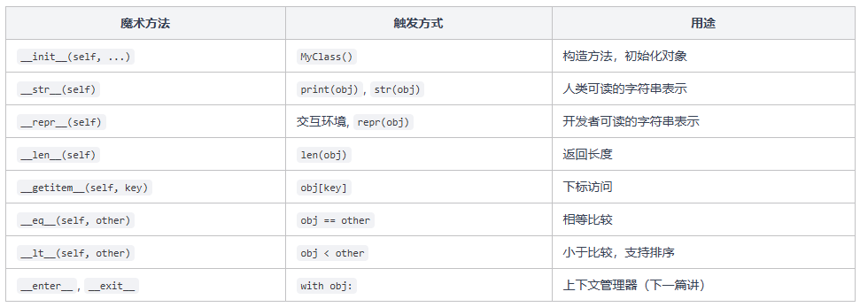

Python 基础入门(5)
类与面向对象
前面几篇教程里，我们一直用 Python 的内置类型来存数据：列表存一组数字，字典存键值对，字符串存文本。这些内置类型够用，但当你想把「一组相关的数据和操作」打包在一起的时候，就需要自己定义类型了。
比如你想表示一个学生，有姓名、年龄、成绩，还能算平均分。你可以用字典 {"name": "Alice", "age": 20, "scores": [90, 85, 92]} 来凑合，但操作起来不方便，代码也不直观。用类（class）来做就优雅多了。
这篇讲 Python 面向对象的基础：类的定义、继承、魔术方法。内容不多，但理解了这些，后面看到别人的代码就不会懵了。
类的定义
用 class 关键字定义一个类。类就是一个模板，定义了这类对象有什么属性 （数据） 和什么方法 （操作）。
几个关键点：
__init__ 是构造方法，每次用 Student("Alice", 20) 创建对象时，Python 会自动调用它。你在里面用 self.xxx = xxx 给对象绑定属性。
self 是每个方法的第一个参数，指向当前对象本身。调用 alice.add_score(90) 时，Python 自动把 alice 传给 self，你不需要手动传。
如果你写过 Java 或 C++，self 就相当于 this，只不过 Python 要求显式写出来。
你可能会好奇：方法定义时写了 self，调用时却不用传，这不是参数对不上吗？这其实是 Python 的语法规则，alice.add_score(90) 在底层等价于 Student.add_score(alice, 90)，Python 帮你把对象自动传进去了。
属性的访问和修改
Python 的对象属性是完全开放的，可以随时读取和修改，也可以动态添加新属性：
Python 没有 Java 的 private、protected 这些访问控制关键字。约定俗成的做法是：以下划线开头的属性（如 _name）表示「不建议外部直接访问」，但这只是君子协定，Python 不会真的阻止你。
继承
继承就是 「在已有类的基础上扩展」 。子类自动拥有父类的所有属性和方法，还可以添加新的或者重写已有的。
Cat(Animal) 表示 Cat 继承自 Animal。Cat 没有定义 __init__，所以自动用 Animal 的。Cat 重写了 speak() 方法，调用时会用 Cat 自己的版本。可以自己改动父类的方法名称，再试试看输出是怎么样的呢。
如果子类需要在父类的基础上扩展 __init__，可以用 super() 调用父类的方法：
super() 返回一个代理对象，通过它可以调用父类的方法。super().__init__(name) 就是调用父类 Animal 的 __init__，确保 name 属性被正确设置，然后子类再添加自己的 owner 属性。
魔术方法
Python 类里有一些以双下划线开头和结尾的特殊方法，叫做魔术方法（也叫 dunder methods，double underscore 的缩写）。它们不是你直接调用的，而是 Python 在特定场景下自动调用。
前面已经见过 __init__，它在创建对象时自动触发。下面再来看几个最常用的。
__str__ 和 __repr__
当你 print() 一个对象，或者在交互式环境里直接输入对象名时，Python 会调用这两个方法来决定「怎么显示这个对象」。
__str__ 是给人看的，print() 和 str() 会调用它。__repr__ 是给开发者看的，在交互式环境和容器（列表、字典）中显示时使用。
如果只定义一个，优先定义 __repr__，因为 __str__ 没定义时 Python 会退而求其次调用 __repr__。
__len__ 和 __getitem__
定义了 __len__，你的对象就能用 len() 函数。定义了 __getitem__，就能用 [] 下标访问。
这就是 Python 的哲学：通过实现特定的魔术方法，让你的自定义对象像内置类型一样使用。len()、[]、for 循环这些操作本质上都是在调用对象的魔术方法。
__eq__ 和 __lt__
定义了 __eq__ 就能用 == 比较两个对象，定义了 __lt__ 就能用 < 比较，同时 sorted() 排序也能自动工作。
sorted() 排序只需要 __lt__ 就够了。当你写 a > b 时，如果 a 没有定义 __gt__，Python 会回退尝试 b.__lt__(a)，所以只定义 __lt__ 也能让 > 工作。
但只定义 __lt__ 并不能让 <=、>= 自动工作，因为 Python 不会从 __lt__ 和 __eq__ 推导出 __le__。
如果觉得每个都写太麻烦，可以用标准库的 functools.total_ordering，只需要定义 __eq__ 加上 __lt__/__gt__/__le__/__ge__ 中的任意一个，就能自动补全其余的比较方法。
常见的魔术方法速查
前面讲了最常用的几个魔术方法，这里汇总一下，方便你查阅：

Python 的魔术方法远不止这些，但常用的就这些。说白了，Python 的运算符和内置函数（len、print、sorted、[] 等）本质上都是在调用对象的魔术方法 。 你给自定义类实现了这些方法，它就能像内置类型一样使用。
小结
这篇讲了 Python 面向对象的核心内容。class 把数据和操作打包在一起，__init__ 负责初始化，self 指向当前对象。继承让你在已有类的基础上扩展，super() 调用父类的方法。
魔术方法是 Python 面向对象的精髓：通过实现 __str__、__len__、__eq__ 这些方法，你的自定义对象就能融入 Python 的内置体系，用 print()、len()、==、sorted() 来操作。